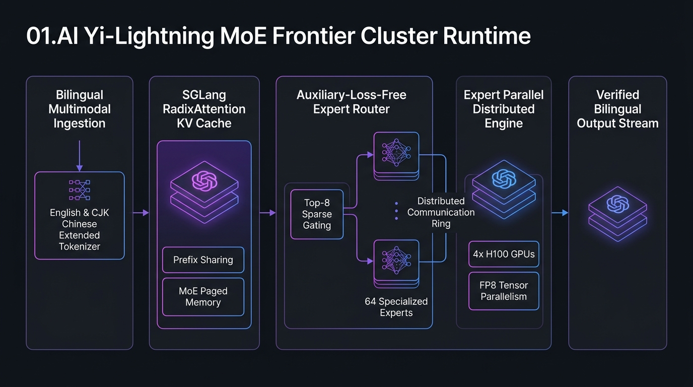

MoE Cluster Architecture
Configure dynamic expert routing, bilingual tokenizer caches, and FP8 tensor/expert parallelism.
MoE Telemetry & Inference Blueprint
Token Generation Throughput
184.2 tok/s
Active / Total Params (Ref.)
18B / 110B
LMSYS Arena Standing
Global Top 5
Click "Generate Yi-Lightning Serving Spec" to construct the cluster blueprint...
01.AI Yi-Lightning MoE Cluster Topology

Overview & Frontier Capabilities
01.AI Yi-Lightning is a frontier Mixture-of-Experts (MoE) model that ranked among the top models on the LMSYS Chatbot Arena at launch, offering strong bilingual (English & Chinese) reasoning at low serving cost. It is served through the 01.AI API; its weights and exact parameter counts are not public.
Note: The expert counts, parameter sizes and throughput figures in this studio are an illustrative reference blueprint for self-hosting a comparable fine-grained MoE model (e.g. on SGLang with expert parallelism), not official Yi-Lightning specifications.
Core Technical Innovations
- Auxiliary-Loss-Free Load Balancing: Eliminates model quality degradation caused by artificial routing penalties, allowing experts to naturally specialize across mathematics, code synthesis, and multilingual nuances.
- Extended CJK Bilingual Tokenizer: Compresses Chinese and East Asian text by up to 2.4x compared to conventional tokenizers, slashing inference latency and KV cache footprint in half.
- SGLang RadixAttention with MoE Paging: Enables sub-millisecond prefix caching across multi-turn enterprise conversations and agent tool chains.
Infrastructure & Software Technology Stack
Distributed Cluster Infra
- GPU Nodes: 4x NVIDIA H100 (80GB SXM5) / 8x A100 Cluster
- Interconnect: 400Gb/s InfiniBand / RoCE v2 with NCCL backend
- Orchestrator: Kubernetes StatefulSet & KubeRay RayCluster
- Storage: Shared NVMe Lustre / GPFS for weight checkpoints
MoE Serving Engine
- Serving Framework: SGLang v0.4+ with RadixAttention KV Cache
- Parallelism: Tensor Parallel (TP=4) & Expert Parallel (EP=4)
- Quantization: FP8 E4M3 / E5M2 GEMM Kernels (FlashAttention-3)
- Router Architecture: Top-8 Sparse Gating with Aux-Loss-Free Bias
Bilingual NLP & APIs
- Tokenizer: Extended CJK Byte-Pair Encoder (TikToken format)
- API Protocol: OpenAI Compatible
/v1/chat/completions - Context Length: 131,072 tokens (128K enterprise window)
- Language Coverage: Native Chinese (Simplified/Traditional) & English